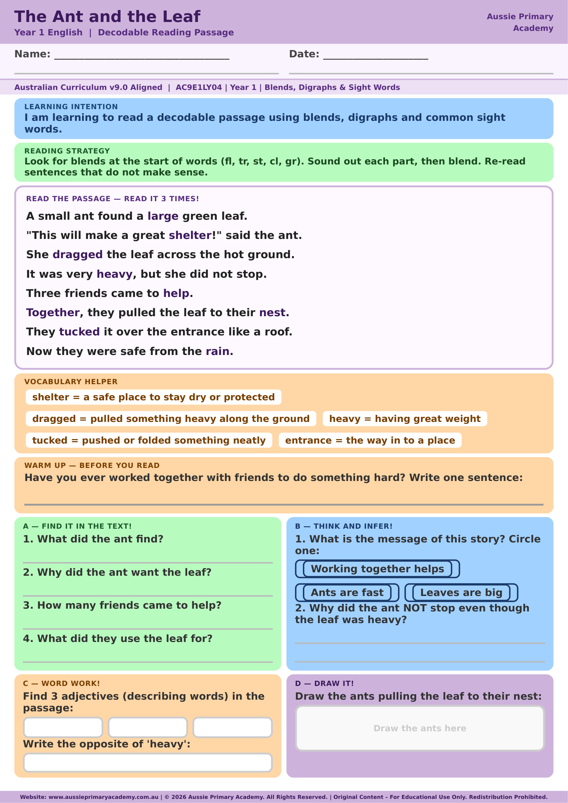

Year 1 · Reading · Decodable · Free Printable
The Ant and the Leaf
Help Year 1 students build fluency with blends, digraphs and sight words in a teamwork-themed decodable story about a small ant and her friends.
Worksheet Preview

Why families download this one
✅ Instant download, no sign-up. Ready to print in under 2 minutes — perfect for tonight's reading practice, a rainy-day activity, or tomorrow's phonics lesson. No email required, ever.
Learning Intention
Students will read a decodable passage about a small ant working with her friends, using blends, digraphs and common sight words to build reading fluency.
Australian Curriculum
AC9E1LY04
Read decodable texts using developing phonic, word and grammar knowledge, and monitor meaning.
Teacher Notes
Preview the tricky vocabulary (shelter, dragged, tucked, entrance) before reading. A great springboard for a short class chat about teamwork and perseverance.
Skills Practised
- Decoding
- Blends & digraphs
- Reading fluency
- Comprehension
Why This Worksheet Works
- A relatable teamwork story gives students something meaningful to talk about after reading.
- The built-in vocabulary helper pre-teaches tricky words, so decoding stays the focus instead of guessing.
- A mix of literal, inferential and word-work questions builds real comprehension, not just recall.
- Written to AC9E1LY04, so it drops straight into a Year 1 phonics or guided reading lesson.
The Ant and the Leaf — Frequently Asked Questions
Common questions from parents, tutors and teachers about this worksheet.
Is "The Ant and the Leaf" aligned with the Year 1 Australian Curriculum?
Yes. This decodable reading passage supports AC9E1LY04 — reading texts using developing phonic, word and grammar knowledge.
Do I need to sign up or enter my email to download?
No. The worksheet downloads instantly as a free PDF — no sign-up and no email required.
Is an answer guide included?
Yes. A shared answer guide for the Year 1 decodable reading pack is available as a free download alongside this worksheet.
How long does this worksheet take to complete?
Most Year 1 students finish the reading and questions in 15–20 minutes, depending on reading pace and support needed.